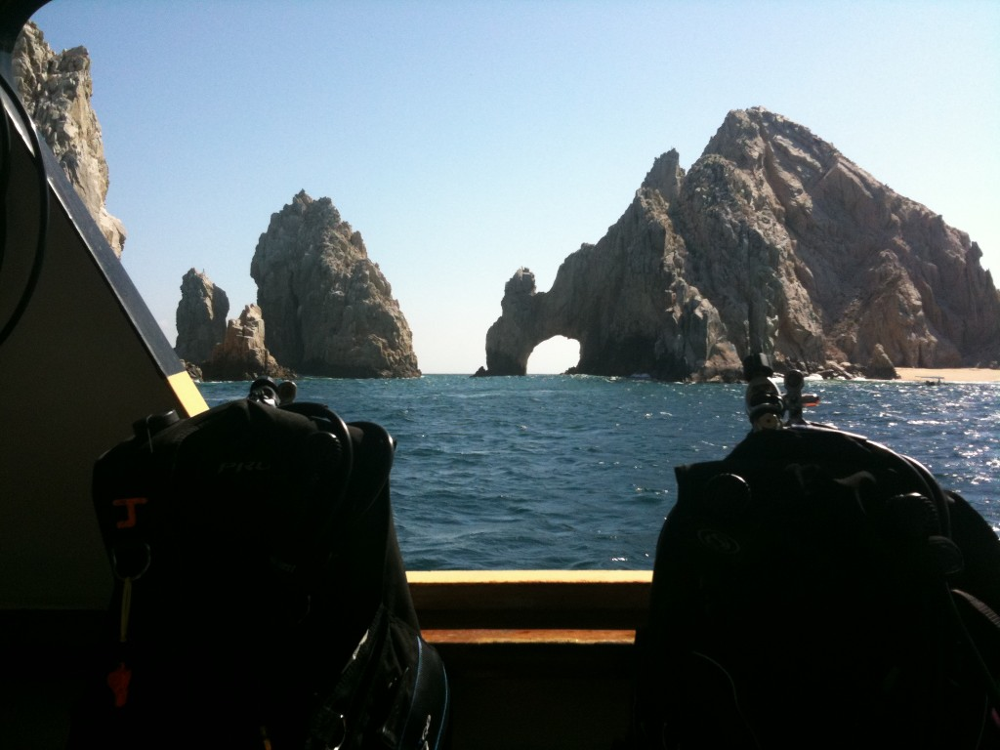

Socorro Islands
Index
Previous
4 of 152
Next
Rating: 3
Name: Socorro 2010-04-17 16-15-57
Date: 4/17/10 4:15:57 PM PDT
Aperture: ƒ/2.8
Shutter Speed: 1/1299
ISO: ISO 70
Focal Length: 3.8mm
Pixel Size: 2048 × 1536 (3.1 MP)
File Name: Socorro 2010-04-17 16-15-57.JPG
File Size: 873 KB
Camera Model: iPhone 3GS
Project Path: Socorro
Copyright Notice: Copyright 2010, Gregg Kellogg
